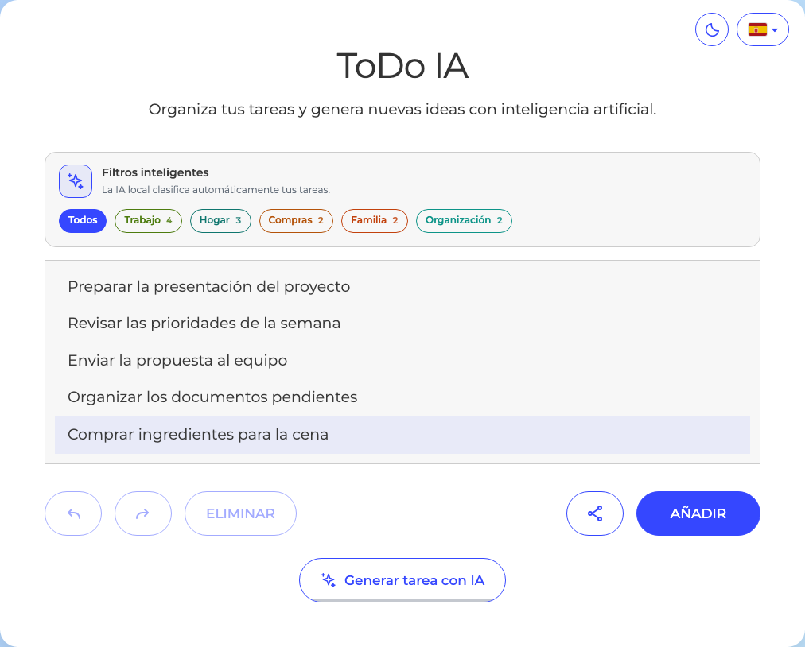
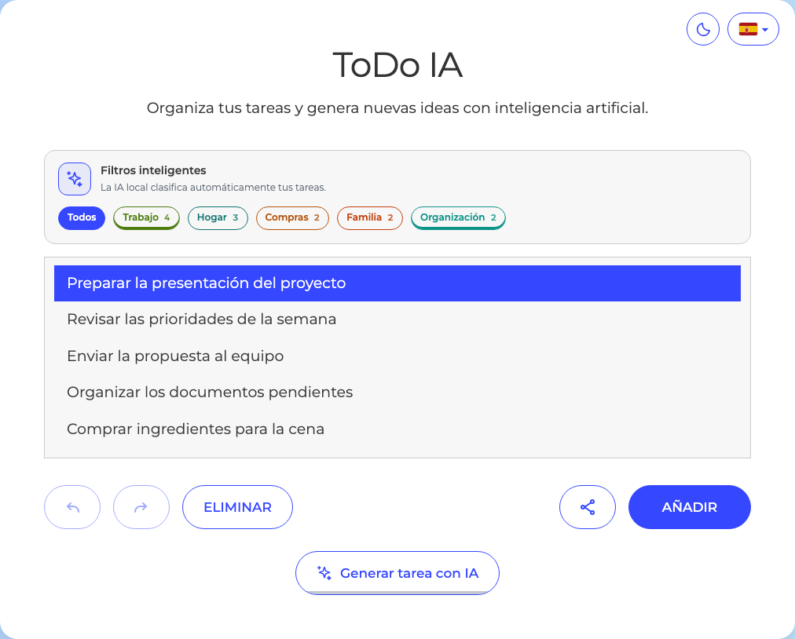
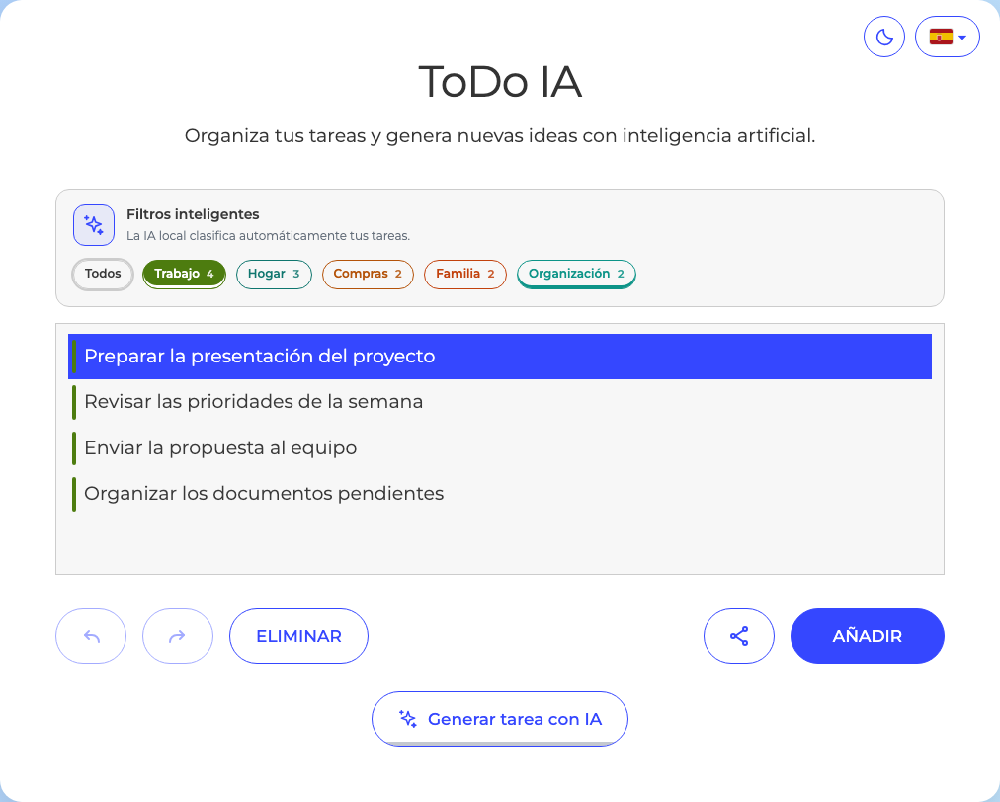
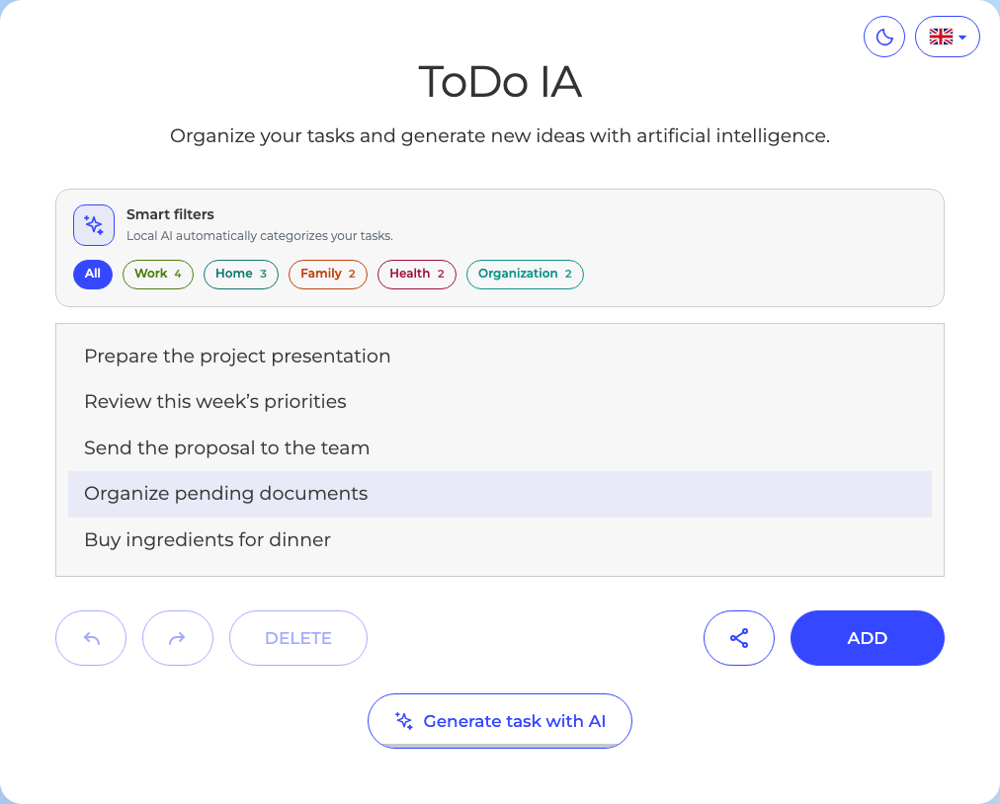
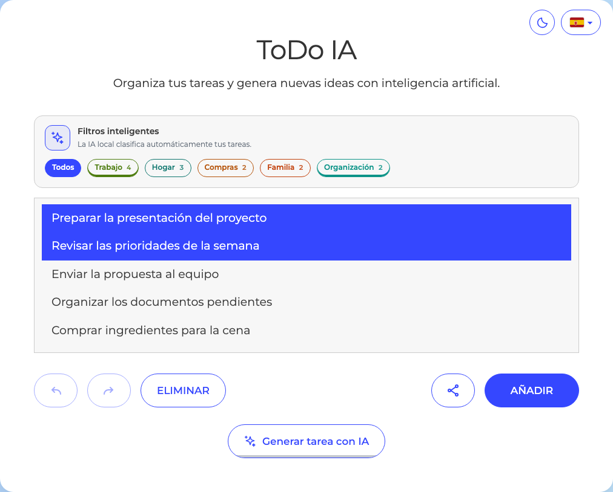
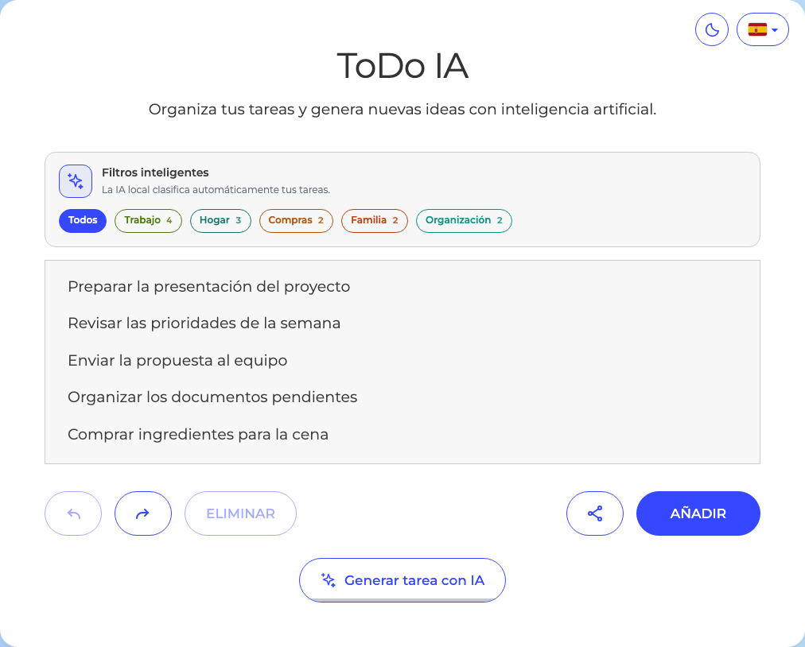
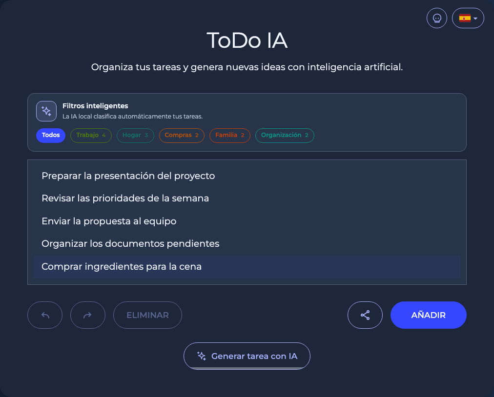
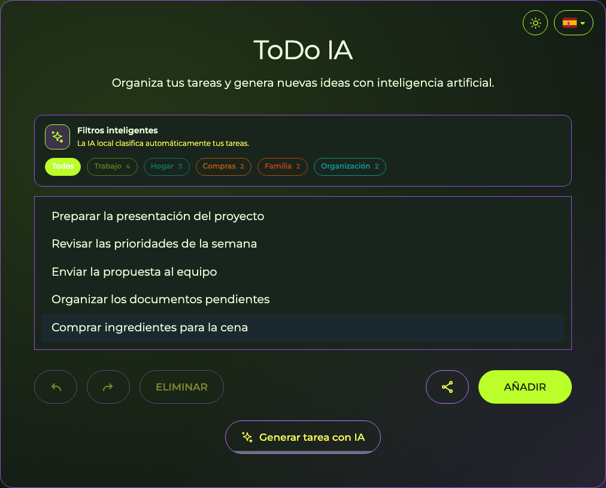

TU PRODUCTIVIDAD. AMPLIFICADA.
Añade, organiza y recupera tus tareas en segundos.

Genera tareas con IA o crea las tuyas a mano.
Filtros claros, rápidos y listos para encontrar lo que importa.


Español e inglés. Las traducciones se reutilizan.

Selecciona varias tareas, elimina y recupera.


Tres temas. Una forma de hacer más.


Organiza. Crea. Avanza.